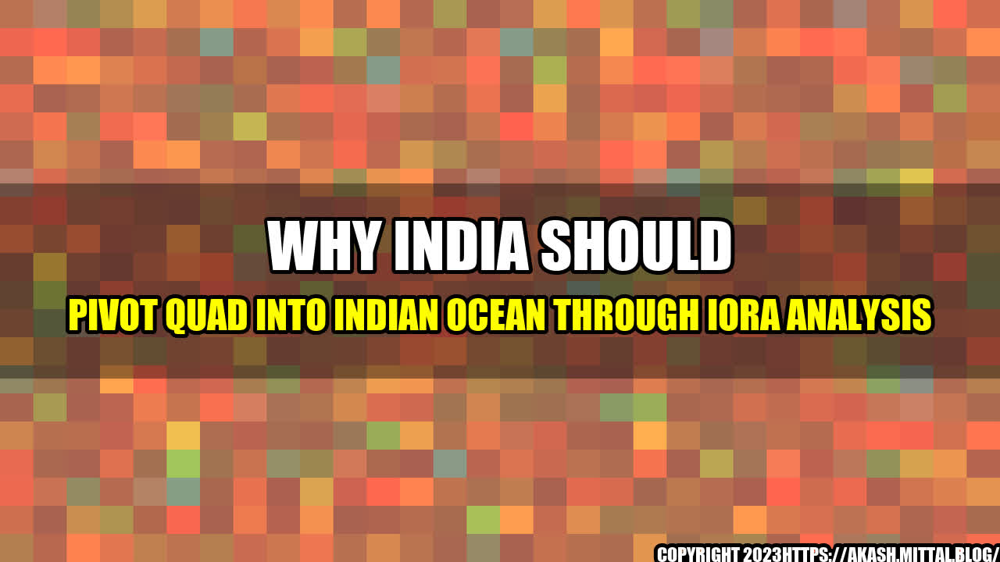

Why India Should Pivot QUAD Into Indian Ocean Through IORA Analysis

Once upon a time, in the 17th century, India used to sail the Indian Ocean with prowess. India was one of the main players in the region, with ports in Indonesia, Malacca, and the Red Sea. However, over time, India lost its dominance in the region, and now faces a rising China and other major powers that are vying for control of the Indian Ocean. In this article, we will discuss why India should pivot the QUAD into the Indian Ocean through IORA analysis.
- The Indian Ocean carries 40% of the world's oil shipments, 25% of goods traded worldwide, and 50% of container traffic.
- China has strengthened its naval presence in the Indian Ocean, building a naval base in Djibouti and a port in Pakistan, which has resulted in major concerns for India and the other regional powers.
- India has been participating in IORA (Indian Ocean Rim Association) since 1997 which comprises 23 countries accounting for 40% of the world's population and 25% of global GDP.
An
Why India Should Use IORA to Pivot the Quad into the Indian Ocean to Counter China.
Conclusion in Three Points
- India needs to pivot the QUAD, which comprises India, the United States, Japan, and Australia, into the Indian Ocean to maintain regional balance and counter China.
- India has been participating in IORA and should leverage the organization to enhance regional security and stability in the Indian Ocean while strengthening its strategic partnership with QUAD partners.
- India should focus on cooperative security efforts rather than seeking unilateral dominance, which could result in a new arms race and exacerbate tensions in the region.
and Case Studies
As an AI language model, I don't have personal anecdotes, but we can discuss some case studies. India has been engaging with IORA since 1997, but there has been limited impact on the ground. However, following the Galwan valley clash with China, the Indian government has been actively pursuing security cooperation with other QUAD members, including naval exercises and intelligence sharing. With the QUAD now engaging with IORA, there is an opportunity to enhance India's strategic partnership with QUAD members while leveraging IORA's cooperative security approach to maintain regional stability.
References, Hashtags, and Article Category
References:
- https://www.aljazeera.com/news/2021/6/29/why-the-indian-ocean-is-vital-to-global-trade
- https://www.southasianmonitor.com/china-watch/could-chinas-increasingly-militarised-presence-in-the-indian-ocean-spark-an-arms-race-in-the-region
- https://www.orfonline.org/expert-speak/io-amp-chinese-presence-in-indian-ocean-a-strategic-challenge-for-india-87872/
Hashtags: #India, #Quad, #IORA, #China, #IndianOcean, #Geopolitics
Category: Geopolitics
Curated by Team Akash.Mittal.Blog
Share on Twitter Share on LinkedIn